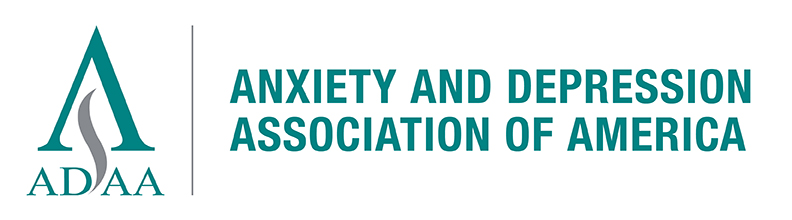
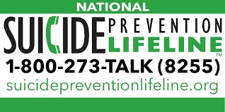

Resouces for Internet Addiction
|
The Center for Internet and Technology Addiction is one of the world's leading research facilities for Internet Addiction. This site includes several basic self-assessments and a plethora of resources to help curb IA cravings. |
|

|
Mental Health America is a community-based nonprofit organization committed to spreading awareness about mental health issues, including Internet Addiction. |
|  |
The Anxiety and Depression Association of America is a nonprofit organization committed to the prevention, treatment, and cure of mental health disorders like anxiety, depression, OCD, and PTSD. |
|  |
The National Suicide Prevention Lifeline is available 24 hours a day, 7 days a week for free and confidential emotional support. |